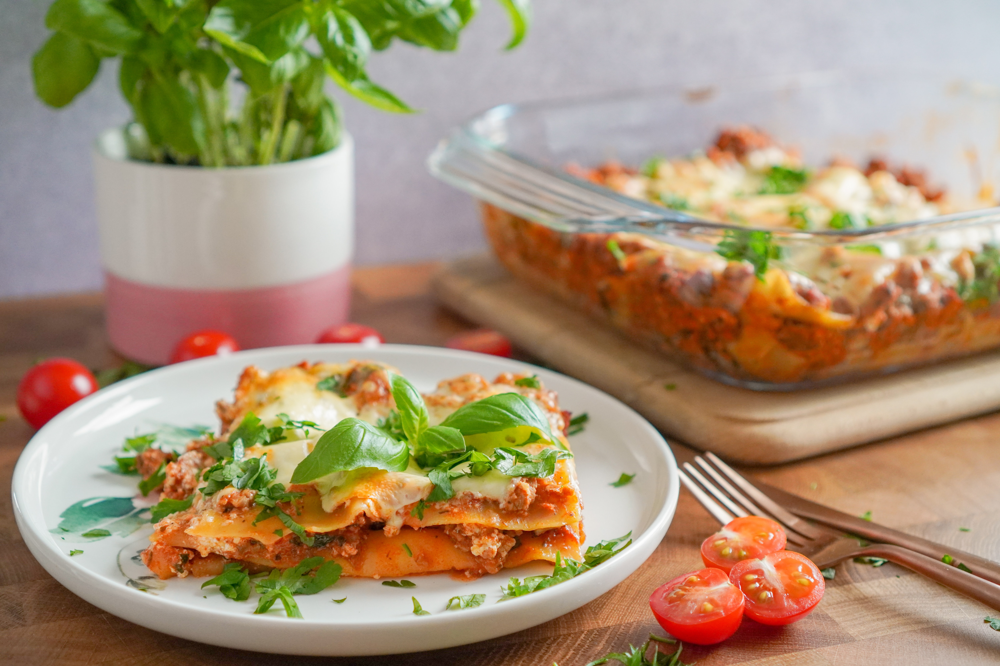

Lasagne

Description:
Lasagne is a type of pasta, possibly one of the oldest types, made of very wide,
flat sheets. Either term can also refer to an Italian dish made of stacked layers of
lasagne alternating with fillings such as ragu (ground meats and tomato sauce), vegetables,
cheeses (which may include ricotta, mozzarella, and parmesan), and seasonings and spices,
like Italian seasoning, such as garlic, oregano and basil. The dish may be topped with
grated cheese, which becomes melted after baking. Typically, cooked pasta is assembled with
the other ingredients and then baked in an oven. The resulting casserole is cut into
single-serving square portions.
Ingredients:
- 1 pound sweet Italian sausage
- 3/4 pound lean ground beef
- 1/2 cup minced onion
- 2 cloves garlic, crushed
- 1 (28 ounce) can crushed tomatoes
- 2 (6 ounce) cans tomato paste
- 2 (6.5 ounce) cans canned tomato sauce
- 1/2 cup water
- 2 tablespoons white sugar
- 1 1/2 teaspoons dried basil leaves
- 1/2 teaspoon fennel seeds
- 1 teaspoon Italian seasoning
- 1 1/2 teaspoons salt, divided, or to taste
- 1/4 teaspoon ground black pepper
- 4 tablespoons chopped fresh parsley
- 12 lasagna noodles
- 16 ounces ricotta cheese
- 1 egg
- 3/4 pound mozzarella cheese, sliced
- 3/4 cup grated Parmesan cheese
Steps:
- First:
In a Dutch oven, cook sausage, ground beef, onion,
and garlic over medium heat until well browned. Stir in crushed
tomatoes, tomato paste, tomato sauce, and water. Season with sugar,
basil, fennel seeds, Italian seasoning, 1 teaspoon salt, pepper,
and 2 tablespoons parsley. Simmer, covered, for about 1 1/2 hours,
stirring occasionally.
- Second:
Bring a large pot of lightly salted water to a boil.
Cook lasagna noodles in boiling water for 8 to 10 minutes. Drain
noodles, and rinse with cold water. In a mixing bowl, combine
ricotta cheese with egg, remaining parsley, and 1/2 teaspoon salt.
- Third:
Preheat oven to 375 degrees F (190 degrees C).
- Forth:
To assemble, spread 1 1/2 cups of meat sauce in the bottom
of a 9x13-inch baking dish. Arrange 6 noodles lengthwise over meat sauce.
Spread with one half of the ricotta cheese mixture. Top with a third of
mozzarella cheese slices. Spoon 1 1/2 cups meat sauce over mozzarella, and
sprinkle with 1/4 cup Parmesan cheese. Repeat layers, and top with remaining
mozzarella and Parmesan cheese. Cover with foil: to prevent sticking, either
spray foil with cooking spray, or make sure the foil does not touch the cheese.
- Fifth:
Bake in preheated oven for 25 minutes. Remove foil, and bake an
additional 25 minutes. Cool for 15 minutes before serving.